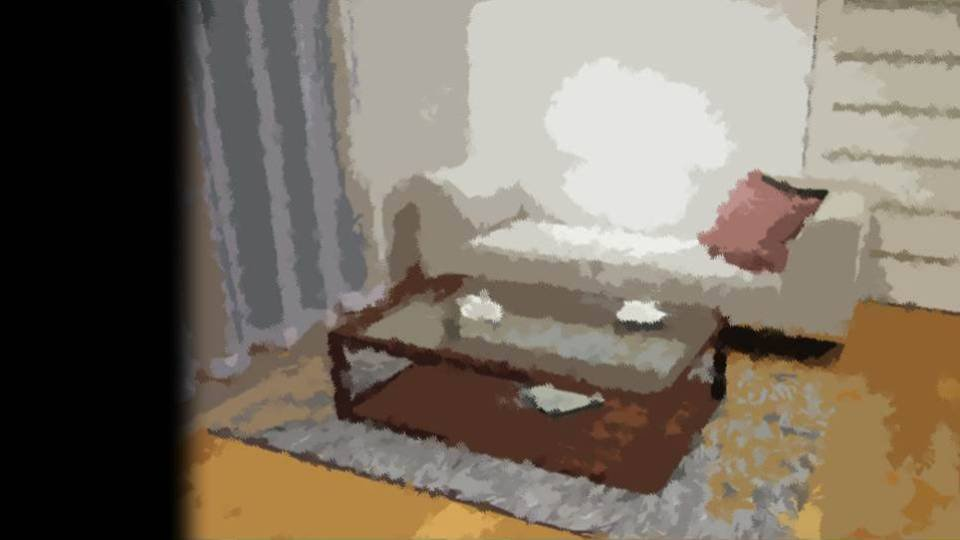
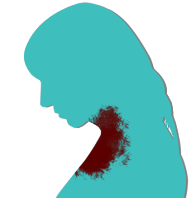
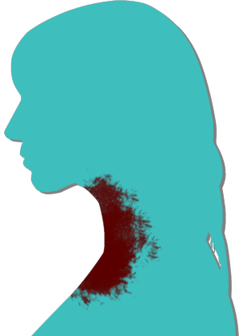
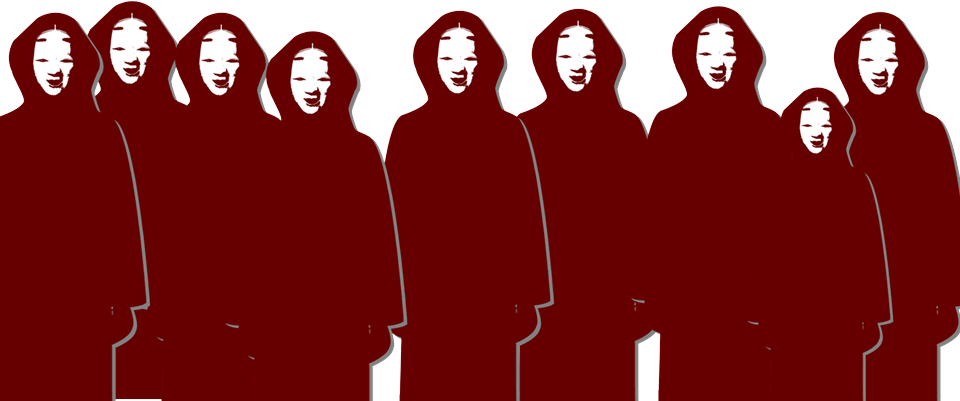
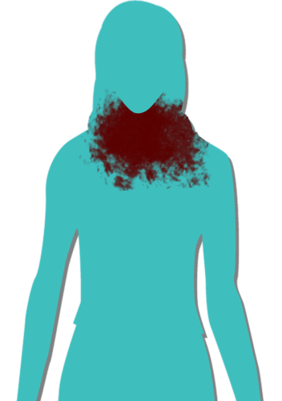
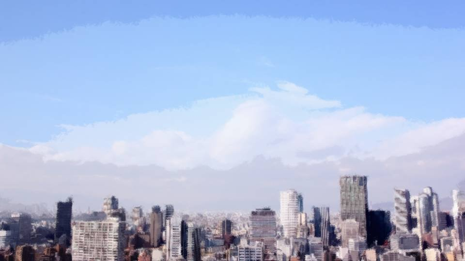
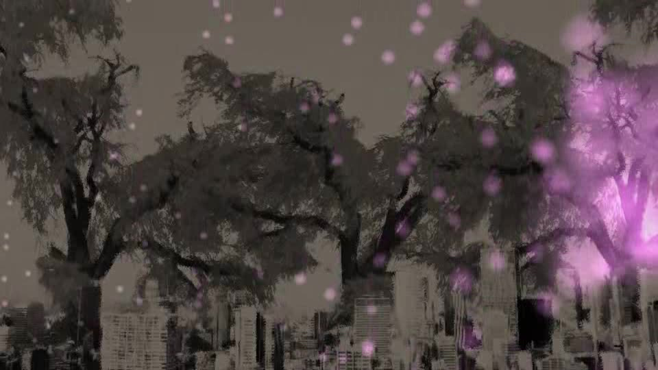
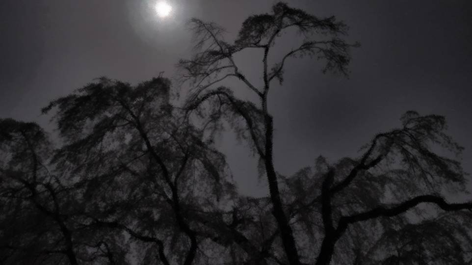
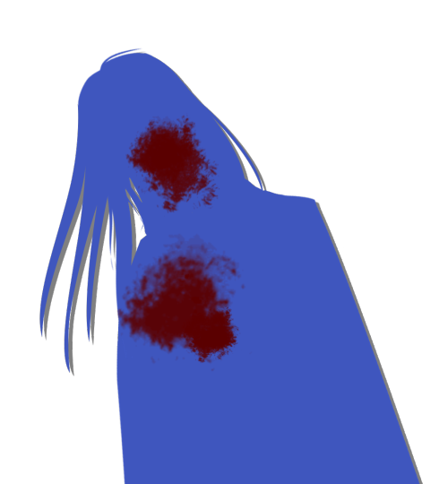
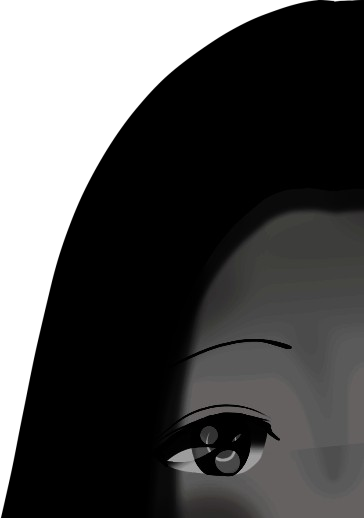

Shigatsu Youka ~Hope (Pandora)~

All three of us sat still, without a word.
Obasan won't want to talk about Haruka, and Kana-chan doesn't seem to know that much either.
Before that, the two of them spent the whole day searching for Chiga-nee, so they must be exhausted too.
Obasan won't want to talk about Haruka, and Kana-chan doesn't seem to know that much either.
Before that, the two of them spent the whole day searching for Chiga-nee, so they must be exhausted too.
So much happened in this one day.

Thank you very much for holding such a grand entrance ceremony today for us, the Shiyo 800 new students of Motoki Prefectural High School.
To the principal, to all the teachers, and to our honored guests, I offer my heartfelt thanks.
Here in Motoki-cho, famous for its cherry blossoms, the petals are dancing everywhere today as well.
The scenery surrounding us seemed almost to shine, and on the way to this hall, walking with my mother, each time I found cherry blossoms or other spring flowers, I felt as though every one of them was celebrating us new students.
The scenery surrounding us seemed almost to shine, and on the way to this hall, walking with my mother, each time I found cherry blossoms or other spring flowers, I felt as though every one of them was celebrating us new students.
Having received such warm words from the principal, our honored guests, and the upper-year students, I am truly deeply moved.
Until now, I have followed the rails my parents laid for me without a single question.
Until now, I have followed the rails my parents laid for me without a single question.
However, upon entering this school and receiving words from all of you, I have come to wish, without fail, to gain independence and learning at this school and to find what I myself want to become in the future.
It was this morning that I heard Goto's speech at the entrance ceremony.
For Goto, it was an utterly ordinary speech, with no attempt to stand out.
She'd have wanted to speak more in her own words, I'm sure, but with Chiga-nee's case she couldn't spare the attention.
For Goto, it was an utterly ordinary speech, with no attempt to stand out.
She'd have wanted to speak more in her own words, I'm sure, but with Chiga-nee's case she couldn't spare the attention.



"Natsumi..."
"It's okay. Trust my intuition."
"I know, but..."
"Akane, Natsumi won't be a child forever."
I left the house with Dad and Mom watching me worriedly.
"It's okay. Trust my intuition."
"I know, but..."
"Akane, Natsumi won't be a child forever."
I left the house with Dad and Mom watching me worriedly.


"Goto, you don't want any more lunch?"
"If I eat too much, the blood won't reach my brain."
"Don't go saying you're hungry later, okay?"
Three servings of lunch ended up in our three stomachs in roughly equal shares.
"If I eat too much, the blood won't reach my brain."
"Don't go saying you're hungry later, okay?"
Three servings of lunch ended up in our three stomachs in roughly equal shares.

The entrance ceremony feels like ages ago now.
A case heavier and more mysterious than I'd imagined.
More than a case, 'phenomenon' is the better word now.
The breeding of an unknown fungus―I can understand that that's the cause.
A case heavier and more mysterious than I'd imagined.
More than a case, 'phenomenon' is the better word now.
The breeding of an unknown fungus―I can understand that that's the cause.
I understand cause and effect, but the process is far too complex to grasp.
If even Goto hasn't found the answer yet, there's no way someone like me...
If even Goto hasn't found the answer yet, there's no way someone like me...

Kana-chan, sitting, is nodding off.
The night has grown quite late.
The night has grown quite late.
"Obasan, you're tired, right?
I'll keep watch, so why don't you rest a little too, Obasan?"

"I'm fine...
I'm fine..."
She doesn't look fine to me...
She doesn't look fine to me...
"Obasan, you're getting on in years too, so old folks should act their age and get to bed early, you know?"
―is what I wanted to say, but of course I held my tongue.
I'd rather she just fell asleep, so I deliberately didn't keep the conversation going.
I'm the only one with any energy left.
―is what I wanted to say, but of course I held my tongue.
I'd rather she just fell asleep, so I deliberately didn't keep the conversation going.
I'm the only one with any energy left.
"Say, Natsumi-chan..."
"Hm?"
I wanted her to sleep, but it was Obasan who broke the silence.
"Hm?"
I wanted her to sleep, but it was Obasan who broke the silence.
"This is...
just something I've been imagining on my own, but..."
"Yeah."
"Did that man really cut off Sakura-san's head, I wonder..."
"Huh?"
"Yeah."
"Did that man really cut off Sakura-san's head, I wonder..."
"Huh?"
"Mmm..."
Kana-chan let out a sound as if answering Obasan and flopped onto the floor.
She rolled onto her back and began to breathe softly.
Kana-chan's sleeping face is very cute.
With Kana-chan asleep, Obasan showed a look of relief.
I see―the "that man" Obasan meant is Kotaro-san.
A very unpleasant story if Kana-chan heard it.
Obasan began to speak again, as if she'd made up her mind.
I see―the "that man" Obasan meant is Kotaro-san.
A very unpleasant story if Kana-chan heard it.
Obasan began to speak again, as if she'd made up her mind.
"I started thinking something strange.
Kotaro-san―if he wasn't the one who cut off Sakura-san's head...
Eiichiro-san might be the one who did it."
"Eiichiro-san... that's Haruka's dad, right?"
Obasan gave a small nod.
I understand what she's saying, but not what she wants to say.
"Eiichiro-san... that's Haruka's dad, right?"
Obasan gave a small nod.
I understand what she's saying, but not what she wants to say.
Ojisan cut off Sakura-san's head?
Kotaro-san and Ojisan are identical twins, so a mistake is entirely possible.
But that's only if Ojisan were alive.
At the time, Ojisan had already been dead 2 years.
Obasan must understand that well enough.
Kotaro-san and Ojisan are identical twins, so a mistake is entirely possible.
But that's only if Ojisan were alive.
At the time, Ojisan had already been dead 2 years.
Obasan must understand that well enough.
So what Obasan wants to say is―
"You mean Ojisan's ghost appeared?"
"Roughly speaking, I suppose that's what it comes to."
"A ghost's doing, at this point..."
"I think the idea of a ghost is terribly silly myself. But Kotaro-san cutting off Sakura-san's head is every bit as impossible."
"You mean Ojisan's ghost appeared?"
"Roughly speaking, I suppose that's what it comes to."
"A ghost's doing, at this point..."
"I think the idea of a ghost is terribly silly myself. But Kotaro-san cutting off Sakura-san's head is every bit as impossible."
At that, I remembered the riverbank from before.

Kotaro-san still thinks of Sakura-san and faithfully visits her grave.
Deep as their love was, to cut off her head.
It's behavior that does make you wonder if he'd lost his mind.
But losing your mind and a ghost are on different planes of impossible.
Deep as their love was, to cut off her head.
It's behavior that does make you wonder if he'd lost his mind.
But losing your mind and a ghost are on different planes of impossible.
"I'm sorry, Natsumi-chan, saying something so strange. Please forget it."
"Yeah..."
My reply will be taken as rejecting Obasan's idea.
What would Goto say if she heard this?
That it's unscientific and not worth considering?
"Yeah..."
My reply will be taken as rejecting Obasan's idea.
What would Goto say if she heard this?
That it's unscientific and not worth considering?
"You see, I got the idea from some advice Goto-chan gave."
"Goto's...?"
An unexpected name to bring up.
"Goto's...?"
An unexpected name to bring up.
"Chigaya-chan said she was advised: 'The curse-killings are where impossible things happen.
Investigate with the unthinkable in view, too.'
That's what Goto-chan told her."
"Impossible things happen... A ghost, too, is normally impossible..."
"So I tried thinking about it. What if it was a ghost's doing? And then, the beheading of Sakura-san..."
"Impossible things happen... A ghost, too, is normally impossible..."
"So I tried thinking about it. What if it was a ghost's doing? And then, the beheading of Sakura-san..."
"If Ojisan were the culprit, what would the motive be...?
The reason he'd appear, even as a ghost, to cut off a head."
"Oh, I can think of plenty. For instance... preparing to cause the curse-killings every year."
"Then the curse-killer is Ojisan too?"
"I'm sorry, Natsumi-chan... there's no way, is there, after all..."
With that, Obasan fell silent.
"Oh, I can think of plenty. For instance... preparing to cause the curse-killings every year."
"Then the curse-killer is Ojisan too?"
"I'm sorry, Natsumi-chan... there's no way, is there, after all..."
With that, Obasan fell silent.
But...
but, somehow.
Part of it fit oddly well.
Of course, thinking it a ghost is far too wild.
But if Ojisan's ghost were the culprit, the motive and everything so far start to come oddly into focus.
Part of it fit oddly well.
Of course, thinking it a ghost is far too wild.
But if Ojisan's ghost were the culprit, the motive and everything so far start to come oddly into focus.
They come into focus, and yet...
I don't quite know myself why that is.
It's the reverse of 'something nags at me'―it nags at me because 'nothing nags at me.'
Why is it that 'nothing nags at me' about the theory of Ojisan's ghost as the culprit?
Could I already, without knowing it, have information that backs up the ghost theory?
It's the reverse of 'something nags at me'―it nags at me because 'nothing nags at me.'
Why is it that 'nothing nags at me' about the theory of Ojisan's ghost as the culprit?
Could I already, without knowing it, have information that backs up the ghost theory?
"Obasan, ghost or not, what if we think a bit more with Ojisan as the culprit?"
"Whether or not he's a ghost... what do you mean?"
"For instance... you know, like, he wasn't actually dead."
"That's impossible too. When Eiichiro-san died, Akane and Ryoji-san saw it happen, you know? The hospital confirmed his death, the police did an autopsy, the settlement held the funeral, and the burial..."
"Whether or not he's a ghost... what do you mean?"
"For instance... you know, like, he wasn't actually dead."
"That's impossible too. When Eiichiro-san died, Akane and Ryoji-san saw it happen, you know? The hospital confirmed his death, the police did an autopsy, the settlement held the funeral, and the burial..."
"I see... if he was cremated, there's no way, right..."
"Oh, no, that's not it―in the Arata settlement, the custom of burial in the earth still survives."
"What? So Ojisan was buried just as he was?"
"That's right... but still, for him to be alive...
"Oh, no, that's not it―in the Arata settlement, the custom of burial in the earth still survives."
"What? So Ojisan was buried just as he was?"
"That's right... but still, for him to be alive...

Hm, wait a moment.
Now that you mention it..."
"In the Arata settlement, they call the dead shinigami.
A shinigami comes back to this world on the anniversary of its death and tries to take the living away.
The Arata settlement's memorial service is a rite to drive the shinigami off."
"Not to mourn the deceased, or anything like that?"
"The rite is an empty formality now, so everyone attends the service simply meaning to mourn. But trace it to its roots, and that's how the Arata settlement treats the shinigami."
"Not to mourn the deceased, or anything like that?"
"The rite is an empty formality now, so everyone attends the service simply meaning to mourn. But trace it to its roots, and that's how the Arata settlement treats the shinigami."

"What's more, every attendant has to wear a Noh mask and red robes, disguised so no one can tell who is who."
"That's what I saw in the forest just now! The people of the settlement were wearing Noh masks and red robes and carrying nata and maces!"
"That's the formal dress for battle. When the residents of Arata fight a threat from outside, they've dressed that way since ancient times."
"That's what I saw in the forest just now! The people of the settlement were wearing Noh masks and red robes and carrying nata and maces!"
"That's the formal dress for battle. When the residents of Arata fight a threat from outside, they've dressed that way since ancient times."
"To hide who they are, after all?"
"Yes. Even the people of Arata can't live on the settlement's supplies alone, so it's to keep from being recognized when they go out into the outside world."
"Is that all it is, I wonder..."
"Hm?"
"Yes. Even the people of Arata can't live on the settlement's supplies alone, so it's to keep from being recognized when they go out into the outside world."
"Is that all it is, I wonder..."
"Hm?"

"I understand why they'd dress so the people outside can't recognize them when they fight...
But is that really the only reason, I wonder."
"What do you mean?"
"What do you mean?"
"Then there'd be no reason to dress that way for the memorial service too, would there?"
"So the shinigami can't tell the living apart―"
"Does the shinigami choose people? Does it choose who it wants to take? Not just anyone?"
"So the shinigami can't tell the living apart―"
"Does the shinigami choose people? Does it choose who it wants to take? Not just anyone?"
"I can't tell that much, but..."
"I feel like something's missing. Noh masks and red robes so no individual can be identified... I understand that being identified is a problem when they go to the outside world. But against a shinigami it's meaningless―or rather, strange... Then anyone who might be taken could just skip the memorial service, couldn't they? Worst case, leave the settlement, or something."
"I feel like something's missing. Noh masks and red robes so no individual can be identified... I understand that being identified is a problem when they go to the outside world. But against a shinigami it's meaningless―or rather, strange... Then anyone who might be taken could just skip the memorial service, couldn't they? Worst case, leave the settlement, or something."
"You mean there's a reason they have to attend the service even though a shinigami might take them?"
"Is that... what it is...?"
Am I overthinking it?
It's a tradition from ancient times, so it's only natural that empty formality, ritual, and unclear meaning seep through.
"Is that... what it is...?"
Am I overthinking it?
It's a tradition from ancient times, so it's only natural that empty formality, ritual, and unclear meaning seep through.
But... what is it.
A reason to attend the service even though a shinigami might take you―
I've seen a situation like that somewhere...
It's dangerous, but you have to go.
Knowing the danger, you go, hiding who you are...
A reason to attend the service even though a shinigami might take you―
I've seen a situation like that somewhere...
It's dangerous, but you have to go.
Knowing the danger, you go, hiding who you are...
"Could that be...
Could it be...
me, right now...?"
"What?"
Suddenly, it came to me.
The one who came here knowing the danger, hiding who she is, is me.
In my case, I came to the Arata settlement hiding my intuition from everyone but the Niimura family.
Because in the Arata settlement, precognition is shunned as 'a witch's power.'
"What?"
Suddenly, it came to me.
The one who came here knowing the danger, hiding who she is, is me.
In my case, I came to the Arata settlement hiding my intuition from everyone but the Niimura family.
Because in the Arata settlement, precognition is shunned as 'a witch's power.'
No, wait, surely that's not all.
The reverse is possible too.
This is also tied to precognition, but―
The reverse is possible too.
This is also tied to precognition, but―
video: 桜散る.wmv
The other thing that comes to mind is the conditions for my precognition.
In my case, precognition works when the wind hits me where there are cherry trees, but there's one more condition.
I have to directly see, or hear the voice of, the person who will be in danger.
In my case, precognition works when the wind hits me where there are cherry trees, but there's one more condition.
I have to directly see, or hear the voice of, the person who will be in danger.
video: 桜散る.wmv
If I can't identify the person, I can't sense it.
Shigatsu Youka works through my eyes and ears, so―
and a way to prevent that would be...
In other words... Could it be... the means to stand against Shigatsu Youka is―
Shigatsu Youka works through my eyes and ears, so―
and a way to prevent that would be...
In other words... Could it be... the means to stand against Shigatsu Youka is―
"Obasan! Do you have Noh masks and red robes!?"
"Wh-what's gotten into you all of a sudden?"
"I need Noh masks and red robes!"
"Wh-what's gotten into you all of a sudden?"
"I need Noh masks and red robes!"
―Suddenly, the door of the abandoned hut opened, and a gust of wind blew in.

Where is this?
Tall buildings, and crowds of people.
This is― Motoki-cho.
It's far more urbanized than the Motoki-cho of today, a town where far more people live.
Motoki-cho's future?
Tall buildings, and crowds of people.
This is― Motoki-cho.
It's far more urbanized than the Motoki-cho of today, a town where far more people live.
Motoki-cho's future?
What is this―an earthquake!?

video: 真明徴編.wmvMotoki-cho―what's happening to it?
Motoki-cho―swallowed by cherry trees?
There's no sign of anyone.
A giant cherry tree suddenly appears and swallows Motoki-cho―
Motoki-cho―swallowed by cherry trees?
There's no sign of anyone.
A giant cherry tree suddenly appears and swallows Motoki-cho―
video: 真明徴編.wmv
Motoki-cho has become a ruin, swallowed by Shigatsu Youka.
This is―Motoki-cho's future.
The destruction of Motoki-cho, yet to come.
This is―Motoki-cho's future.
The destruction of Motoki-cho, yet to come.
"Hah! Hah!"
I nearly passed out and went down on my hands and knees.
Far too violent a vision―
Nothing like the intuition or precognition I've known until now.
This isn't 'danger sense'... it's 'extinction sense.'
I nearly passed out and went down on my hands and knees.
Far too violent a vision―
Nothing like the intuition or precognition I've known until now.
This isn't 'danger sense'... it's 'extinction sense.'

"Natsumi-chan, are you okay!?"
Before I knew it, Kana-chan was standing there, knife in hand.
She must have sprung up when the door opened.
And the one who opened the door was―
Before I knew it, Kana-chan was standing there, knife in hand.
She must have sprung up when the door opened.
And the one who opened the door was―

"So you were here after all."
"Natsumi, thank goodness! You're okay!"
Erika-chan and Haruka.
"Natsumi, thank goodness! You're okay!"
Erika-chan and Haruka.
"Haruka! Why are you here!? Why did you come back!?"

"A lot happened...
Never mind that, Natsumi, come outside! It's bad!"
Haruka grabbed my hand and pulled me outside.
Something's wrong outside?
What happened while we were in the hut...?
Something's wrong outside?
What happened while we were in the hut...?

 video: 111.wmv
video: 111.wmvCherry trees in riotous bloom everywhere.
As if the world had changed, beautiful, bewitching flowers lit by the moon―
and the spring wind, blowing wild.
My other sense, asleep until now, wakes once more.
As if the world had changed, beautiful, bewitching flowers lit by the moon―
and the spring wind, blowing wild.
My other sense, asleep until now, wakes once more.
video: 111.wmv―It's here.
video: 111.wmv―Somewhere far above here.
video: 111.wmv―And somewhere far below here, too.
video: 111.wmv―Shigatsu Youka is here.
video: 111.wmv"Natsumi, to beat Shigatsu Youka, we need Kana's power, Grandma says.
We're going after Goto and Chiga-nee to the summit of Mount Itohime, right now."
"Goto...?"
"Goto...?"

 video: 盗視.wmv
video: 盗視.wmv―This is... whose point of view?
video: 盗視.wmv
Chiga-nee and...
video: 盗視.wmv
Goto are there.
video: 盗視.wmv"Good work, Goto-chan. We've finally arrived."
"Finally. We've reached the Goddess. Goto-chan, you did well."
"............"
Chiga-nee, bloodstained as ever.
And Goto, pale, worn out, head hanging.
"Finally. We've reached the Goddess. Goto-chan, you did well."
"............"
Chiga-nee, bloodstained as ever.
And Goto, pale, worn out, head hanging.
video: 盗視.wmvI can see... Goto.
Goto's in danger!
Goto's in danger!
video: 盗視.wmv"Oh!
Heh heh, looks like the relay to Natsumi-chan has connected.
We've finally come near the exit on our end too, so the spores increased and it connected.
It's been a long time, Natsumi-chan. It's me―Haruka's father, Eiichiro Niimura."
―!!
The shock is too much; my brain refuses to let the intuition work, and sight and sound return to reality.
The shock is too much; my brain refuses to let the intuition work, and sight and sound return to reality.

"A-are you okay? Natsumi!"
Before I knew it, I was in Haruka's arms.
Before I knew it, I was in Haruka's arms.
"Haruka...
Goto's in danger!
Chiga-nee and...
your dad...
Goto...!"
"Dad...?"
"Dad...?"
"Erina-chan's been caught, has she...
This is the moment of truth.
I'll say this now: anyone who's scared doesn't have to come."
"I'm going! If Eiichiro-san is there, I have to go...!"

"Grandma, you need my power, right!?"

"If Goto's in danger, I can't keep quiet either!"
Brave words flew back and forth.
Brave words flew back and forth.
Right now, I can make my precognition work.
And I can read Shigatsu Youka's movements like an open book.
But...
And I can read Shigatsu Youka's movements like an open book.
But...
"Noh masks and red robes...
Erika-chan, go back to the settlement and ask for reinforcements."
"Natsumi-chan, what are you suddenly―"
"We need as many people as we can get! Hurry, and bring Noh masks and red robes for everyone!"
"Grandma, Natsumi's intuition is back! Do what Natsumi says for now!"
"Understood. Best hurry."
"Natsumi-chan, what are you suddenly―"
"We need as many people as we can get! Hurry, and bring Noh masks and red robes for everyone!"
"Grandma, Natsumi's intuition is back! Do what Natsumi says for now!"
"Understood. Best hurry."
Erika-chan ran out of the abandoned hut with a step that belied her age.
With Noh masks and red robes―
With Noh masks and red robes―
video: 盗視.wmv"Ugh...!"
Again, something forces its way into my brain.
Again, something forces its way into my brain.
video: 盗視.wmv"Oh, there we go, connected at last.
That's right―those who have the Goddess's power can do a kind of telepathy like this.
Hm? Where did Mom go?
Well, whatever. Come on, hurry on over.
I'll wait without scattering any more spores."
"Hah... hah..."
"Natsumi..."
I see... so this is how it was really meant to be used.
It links those who share the same power and lets them communicate.
The one and only, and powerful, means of communication open to a fungus with no words.
"Natsumi..."
I see... so this is how it was really meant to be used.
It links those who share the same power and lets them communicate.
The one and only, and powerful, means of communication open to a fungus with no words.
But now I understand.
Shigatsu Youka, it seems, wasn't watching me constantly after all.
My five senses weren't streaming out nonstop; they were hijacked at intervals.
Judging from the way Ojisan spoke just now, it hasn't found out that Erika-chan went back to the settlement.
It's all right. I'm sure we'll rescue Goto safely, bring Chiga-nee back to her senses, and all come home alive.
Shigatsu Youka, it seems, wasn't watching me constantly after all.
My five senses weren't streaming out nonstop; they were hijacked at intervals.
Judging from the way Ojisan spoke just now, it hasn't found out that Erika-chan went back to the settlement.
It's all right. I'm sure we'll rescue Goto safely, bring Chiga-nee back to her senses, and all come home alive.
That sound rings out―
Mixed into the sound, Shigatsu Youka's voice flows into me.
Mixed into the sound, Shigatsu Youka's voice flows into me.

"I have waited for you for a very long time.
Please, come to me."
It was a voice like a young girl's.
This is Shigatsu Youka's voice― Does Shigatsu Youka have a will of its own?
It was a voice like a young girl's.
This is Shigatsu Youka's voice― Does Shigatsu Youka have a will of its own?
No...
It isn't.
Shigatsu Youka is no fungus.
It's human...!
Shigatsu Youka is no fungus.
It's human...!
Read ✓ Next in this arc →